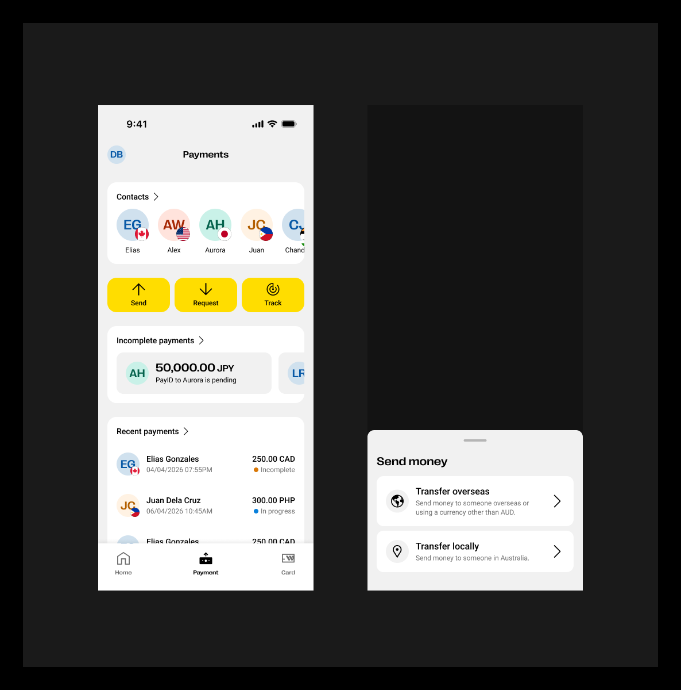
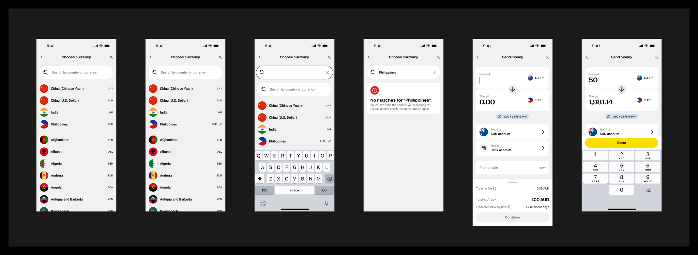
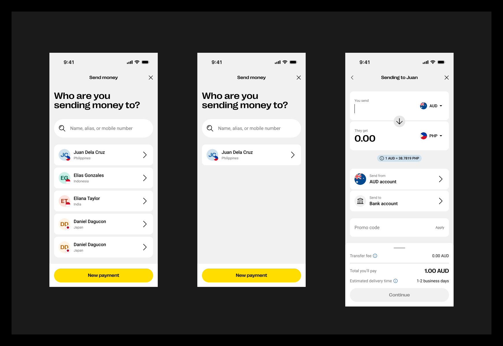
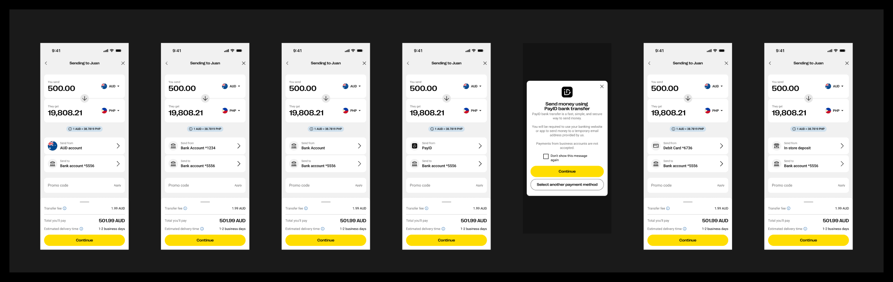
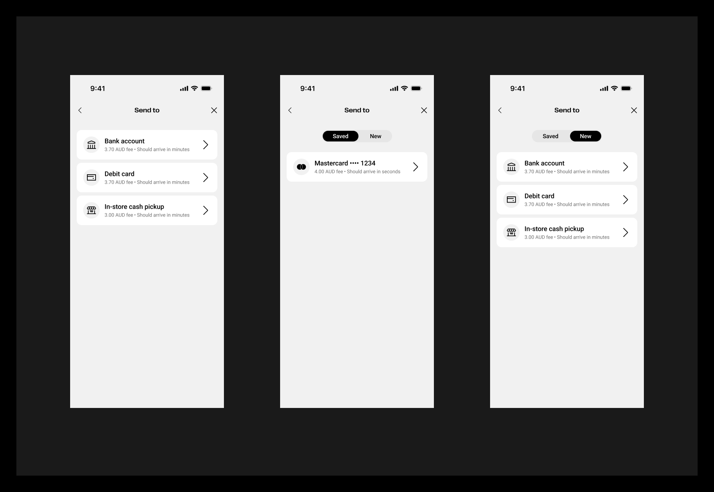
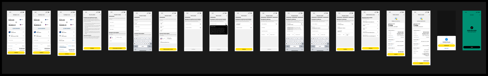

A strategic case study examining how establishing a unified UX baseline eliminates inconsistency, accelerates delivery, and transforms user experience from a cost center into a competitive advantage.
Western Union’s corridors were each built independently by different squads with no shared reference. Quality was enforced through subjective design critique — dependent on who was in the room, not what the standard required. The same patterns were being designed, tested, and documented multiple times, accumulating drift with every release.
Defined the organisational strategy, designed 142 screens across 7 payment methods, established the quality framework, and embedded the baseline into daily team workflows through governance, instruction pages, and page templates.
When multiple teams ship features independently without a shared reference, the user experience degrades exponentially with each release.
Team A uses a bottom sheet for selection; Team B uses a full-page list. The same action behaves differently across flows, destroying muscle memory and increasing cognitive load.
more time spent learning navigation when patterns conflict
Without shared tokens and validated components, subtle drift accumulates — different border-radii, inconsistent spacing scales, conflicting typography hierarchies. The brand erodes screen by screen.
of enterprise apps have 3+ conflicting button styles (Baymard Institute)
Without baseline standards for contrast ratios (4.5:1), touch targets (44x44pt), focus management, and screen reader support, compliance becomes reactive — discovered in audits, not prevented by design.
of top fintech apps fail WCAG 2.1 AA on first audit
Teams redesign solved problems because no shared reference exists. Patterns that were validated through research get reinvented poorly, wasting sprints on problems already solved elsewhere.
of design effort is re-solving previously solved problems
Without a baseline, there is no benchmark. You cannot say "this experience is better" because there is no agreed standard to compare against. Quality becomes subjective opinion, not evidence.
objective criteria for "good enough to ship" without a baseline
Every new feature starts from first principles. Without reusable, validated patterns, designers spend 40% of their time on structural decisions that should already be codified.
longer design phase when no baseline patterns exist
More than a style guide. More than a component library. A UX baseline is the validated, measurable standard of how your product should work.
A UX Baseline is a comprehensive, documented reference that defines the intended user experience across all touchpoints. It serves as both a design contract (what we promise to users) and a quality gate (what we measure against).
Unlike a design system (which provides components), a baseline defines how those components compose into flows, what standards they must meet, and what validated patterns exist for common interactions.
The E1 Global Baseline for Send Money IMT establishes exactly this — a validated, screen-level reference that any team worldwide can build against with confidence, knowing it meets accessibility, usability, and brand requirements.
Research-backed flows for common tasks (e.g., recipient selection, amount entry, payment method choice)
WCAG 2.1 AA compliance, touch targets, focus management, screen reader support as non-negotiable gates
Not just what components exist, but how they compose into screens with correct spacing, hierarchy, and states
Measurable targets: CLS < 0.1, input latency < 100ms, animation duration 150-300ms
Human language guidelines, error message formats, progressive disclosure patterns for complex info
iOS (HIG) vs. Android (Material) conventions respected while maintaining brand identity
The E1 Baseline was not a response to a design problem. It was a response to an organisational one: how do you maintain quality, speed, and consistency when 200+ corridors, multiple product squads, and international teams are all building variations of the same core journey — simultaneously, without a shared reference?
At scale, individual design quality becomes irrelevant if there is no system to replicate that quality across teams and markets. The strategy required stepping back from screen design entirely and asking a different question: what organisational infrastructure does quality require?
The answer was a three-part framework — strategic principles that defined how the baseline would work as an organisation, not just as a design artefact. These principles governed every decision: what got included in the baseline, who owned it, how it evolved, and how teams were expected to use it.
200+ country corridors, each with unique payment methods, compliance rules, and user expectations
Multiple product squads operating autonomously, each making independent design decisions
No shared reference → every squad reinventing patterns already solved elsewhere, accumulating drift with each release
Quality enforced through subjective design critique — dependent on who was in the room, not what the standard required
A pattern joins the baseline only after usability testing or a formal accessibility audit — never by consensus or assumption.
Squads can deviate from the baseline, but must document why — preventing silent drift while allowing legitimate market variation.
The baseline is not static. Corridor-level innovations that prove themselves are reviewed quarterly for promotion into the global reference.
Strategic principles only work if teams can use them in daily work without friction. Two artefacts operationalize the strategy at the file level:
Embedded in Figma, these answer when to use a pattern, what can be adapted, and what good looks like — surfacing standards exactly where designers work, before work begins, not after it's handed off.
Pre-configured Figma pages with correct component libraries, token sets, annotation frames, and quality checklists built in. Compliance becomes structural — it doesn't depend on any individual remembering the rules.
Every screen below represents a validated, reusable pattern — not a one-off design. Teams across 200+ corridors build from this reference.






Our UX Baseline enforces a priority-ranked quality framework. These are not aspirational — they are mandatory gates that every screen must pass before shipping.
Non-negotiable standards that ensure the product is usable by everyone, regardless of ability.
Physical usability on mobile devices — the primary platform for money transfer.
Speed and responsiveness benchmarks that maintain user trust in financial transactions.
Predictable wayfinding that respects platform conventions.
Data entry patterns that reduce errors and guide users through complex flows.
Motion that communicates meaning, maintains spatial context, and feels native.
19 validated screens covering entry → country selection → amount → payment method → recipient details → security → review → confirmation → done states
Quantified organisational cost when teams operate without a shared UX reference.
A direct comparison of team capabilities when operating with and without a UX baseline. Timelines are based on observed delivery patterns across squads during the E1 programme.
Three pillars of organisational value that compound over time.
Teams compose from validated patterns instead of inventing from scratch. New features ship 2x faster because structural decisions are already made and tested.
Every screen has objective pass/fail criteria: contrast ratios, touch target sizes, animation durations, error message formats. Quality becomes a number, not an opinion.
Each validated pattern added to the baseline saves every subsequent team the cost of researching, designing, testing, and documenting that same interaction.
Teams in different markets and time zones produce experiences that feel unified. Users who interact with the product in Australia have the same quality expectations met in the Philippines.
Accessibility isn't a retrofit — it's encoded in every baseline pattern. Teams can't accidentally ship inaccessible experiences when they build from accessible foundations.
The baseline demonstrates how design system components compose into real flows — bridging the gap between "we have a button component" and "we have a validated transfer experience."
Measured impact after the E1 Global Baseline was embedded into the delivery process across squads and corridors.
A phased approach to building and embedding a UX baseline into your organisation's delivery process.
A UX Baseline is not a design luxury — it is organisational infrastructure. Just as engineering teams would never ship without a CI pipeline, design teams should never ship without a validated quality reference.
The E1 Global Baseline demonstrates this principle in practice: 142 unique screens across 7 payment methods, validated for accessibility, usability, and brand — serving as the single source of truth for teams across 200+ markets.
View more case studies →